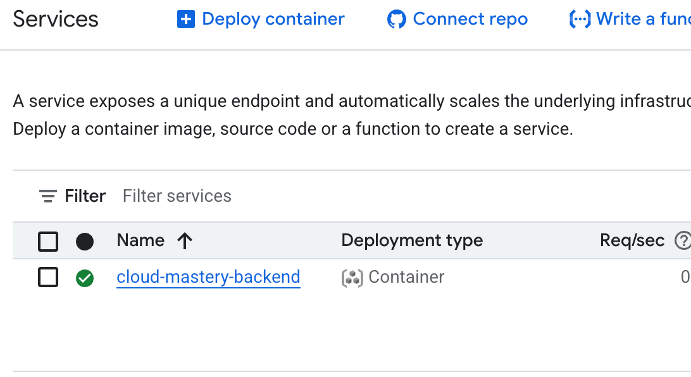

Automating Backend Deployments with Cloud Build¶
In this section, we'll harness the power of Google Cloud Build to create a Continuous Integration (CI) pipeline. This is a crucial step in modern software development.
Once configured, this pipeline will automatically build and deploy our backend application to Cloud Run every time we push new code to our GitHub repository. No more manual deployments!
Step 1: Create a Cloud Build Trigger¶
Let's start by creating the trigger that will listen for changes in our repository.
-
In the Google Cloud Console, use the top search bar to find
Cloud Build, then select Triggers from the results.
-
On the Triggers page, click Create trigger.

Step 2: Configure the Trigger¶
Now, we'll configure the trigger to connect to our specific GitHub repository and run our deployment instructions.
- Name: Give your trigger a descriptive name, like
cloud-mastery-backend-deploy. - Region: Select
us-central1 (Iowa). - Event: Keep the default setting,
Push to a branch. - Source - Connect your GitHub repository:
- Next to Repository, click Connect new repository.
- Select GitHub (Cloud Build GitHub App) and click Continue.
- Authorize the Google Cloud Build app to access your GitHub account.

- On the GitHub installation page, select All repositories and click Install. This grants Cloud Build permission to see your repositories.

- Back in the Cloud Build console, select your forked
your-github-username/cloud-mastery-backendrepository from the dropdown. - Check the consent box and click Connect.
-
Source - Branch: In the Branch field, enter
^master$.What does
^master$mean?This is a regular expression that ensures the trigger only runs for pushes made directly to the
masterbranch, ignoring other branches. -
Configuration - Build Configuration:
- Type: Select
Cloud Build configuration file (yaml or json). - Location: Leave the default
Repositorysetting. The path/cloudbuild.yamlpoints to the deployment instructions file already in your repository.
- Type: Select
-
Advanced - Substitution Variables:
- We need to securely provide our database password to the build process. We'll do this using a substitution variable.
- Click Add variable.
- Variable:
_MYSQL_PRISMA_URL - Value: This is the full connection string for your database. To build it:
- Open a new browser tab and navigate to the Cloud SQL instances page.
- Copy the Public IP address of your
cloud-mastery-sqlinstance.
- Construct the connection string using the format below.
- Variable:
* Paste your completed and correct string into the Value field.Action Required: Replace Placeholders
You must replace the following placeholders in the string below: *
YOUR_PROJECT_ID: Find this on your Google Cloud Console dashboard. *YOUR_INSTANCE_PUBLIC_IP: The public IP address you just copied.
-
Advanced - Service Account:
- Scroll down to the Service Account dropdown.
- Select the service account that starts with
cloud-mastery-. This special service account has the necessary permissions (like deploying to Cloud Run) to execute our pipeline.
-
Click the Create button at the bottom of the page to save your trigger.
Step 3: Trigger Your First Automated Deployment¶
To trigger our pipeline, we need to push a new commit to our GitHub repository. We'll make a small, cosmetic change to do this.
- In your Cloud Shell, click the Open Editor (pencil) icon in the top-right.

- The editor will open. In the left-hand navigation pane, click the Explorer (two pages) icon, then click the Open Folder button.

- A dialog will ask for confirmation. Click OK to open the
cloud-mastery-backendproject.
- In the explorer, click on the
README.mdfile to open it for editing.
- Make any small change to the file, like adding a new line or fixing a typo. The content of the change doesn't matter.
- Now, return to the main Cloud Shell terminal (the black window at the bottom).
-
Execute the following commands one by one to set up your Git identity, commit the file, and push it to GitHub.
Use Your Training Git Identity
Replace the placeholder email and name with the details provided for this training.
Your push to the# Ensure you are in the correct directory cd ~/cloud-mastery-backend # Configure your Git identity for this commit (one-time setup) git config --global user.email "firstname.lastname1@train.pawait.co.ke" git config --global user.name "First Name Last Name" # Stage, commit, and push your change to trigger the build git add . git commit -m "Trigger initial Cloud Build deployment" git push origin mastermasterbranch is the event that our Cloud Build trigger is waiting for!
Step 4: Monitor the Build and Verify Deployment¶
-
Return to the Google Cloud Console and navigate to the Cloud Build History page. You'll see your build kick off automatically, listed with a "Running" status. Click on it to view the live logs.


-
Patience is a virtue! The build process will take about 7 minutes to complete as it builds the container image and deploys it to Cloud Run. Once done, you'll see a green "Successful" status.
-
Let's see the result! Navigate to Cloud Run in the console (or use this direct link: console.cloud.google.com/run). You'll now see your
cloud-mastery-backendservice listed with a green checkmark, indicating it's deployed and healthy. 
Congratulations! Backend Automation Complete!
You have successfully configured a professional Continuous Integration / Continuous Deployment (CI/CD) pipeline. From now on, every time you git push a change to the master branch, Cloud Build will automatically handle the deployment for you.
Next Steps¶
Great job! Next, we will apply these same principles to our frontend application.